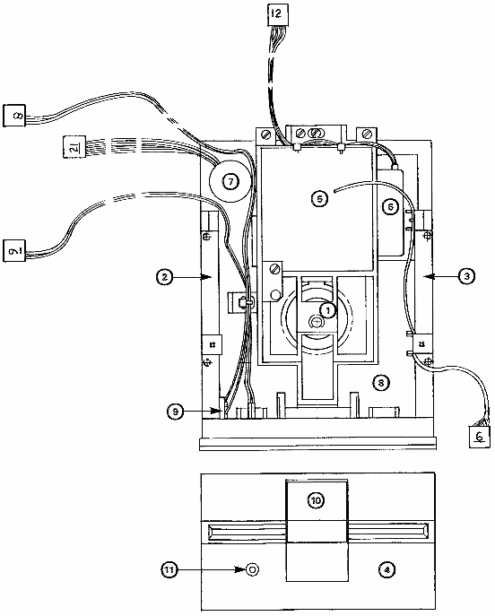

PARTS LIST
805004701 Tandon Drive 8050
825001501 Tandon Drive 8250
- 31419001 TAN DOOR/HUB ASSEMBLY
- Door Assy. w/Frame
- Hub/Collet Assy.
- 31419101 TAN LEFT DISK GUIDE
- Left Disk Guide w/Actuator
- 31419201 TAN RIGHT DISK GUIDE
- 31419301 TAN FRONT BEZEL
- 31419401 TAN 8050 R/W HEAD ASSY.
- R/W Head w/Harness
- Load Arm w/Pad
31419501 TAN 8250 R/W HEAD ASSY.
- Up/Low R/W Head w/Harness
- 31419601 TAN STEPPER MOTOR
- Stepper Motor w/Harness
- 31419701 TAN DC MOTOR
- 31419801 TAN HOUSING/SPINDLE ASSY.
- Housing Base
- Spindle/Tach Assy.
- L/R Guide Shafts
31419901 TAN DRIVE BELT
31420001 TAN HARDWARE
- Assorted Screws
- Assorted Springs, Etc.
- 31420101 TAN WRITE PROTECT ASSY.
- Write Protect Switch w/Harness
- LED Indicator w/Harness
- 31420201 TAN DOOR
31417401 UNIV. Replacement Load Pad
- 90382001 UNIV. LED Holder (2 pc.)
32086901 Drive 0 Label
32086902 Drive 1 Label
|
|

|
| P8 |
1 | WHITE | WRITE PROTECT SWITCH NORMAL CLOSED |
|---|
| 2 | WHITE | WRITE PROTECT SWITCH COMMON |
| 3 | NC | |
| 4 | NC | |
| P9 |
1 | WHITE | ACTIVITY LED CATHODE |
|---|
| 2 | WHITE | ACTIVITY LED ANODS |
| 3 | NC | |
| 4 | NC | |
| P12 |
1 | RED | STEPPER MOTOR |
|---|
| 2 | BROWN | STEPPER MOTOR |
| 3 | GREEN | STEPPER MOTOR |
| 4 | BLACK | STEPPER MOTOR |
| P21 |
1 | YELLOW | TACHOMETER OUTPUT |
|---|
| 2 | GREEN | TACHOMETER RETURN |
| 3 | RED | MOTOR DRIVE |
| 4 | BLUE | MOTOR RETURN |
| 5 | NC | |
| P6 |
1 | RED | ERASE |
|---|
| 2 | BLACK | READ/WRITE |
| 3 | BLUE/YELLOW | CENTER TAP/ERASE (2 WIRES) |
| 4 | WHITE | READ/WRITE |
| 5 | BRAID | SHIELD |
| CONN NO. | PIN NO. | WIRE COLOR | WIRE DESTINATION |
|---|
|
{kind=link}